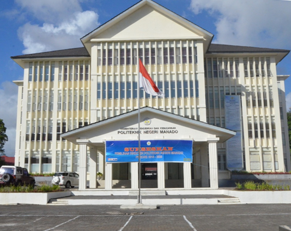

Gedung Pusat PolimdoPoliteknik Negeri Manado adalah sebuah perguruan tinggi negeri yang terdapat di Kota Manado, Sulawesi Utara, Indonesia. |
J.A KatiliProf. Dr. John Ario Katili atau lebih dikenal dengan nama J.A. Katili (lahir di Gorontalo, Indonesia, 9 Juni 1929 – meninggal di Jakarta, Indonesia, 19 Juni 2008 pada umur 79 tahun) adalah seorang saintis di bidang geologi, pendidik, birokrat, politisi, serta diplomat Indonesia. Ia juga dikenal pernah mendalami ilmu-ilmu sastra secara langsung dari HB Jassin, Idroes dan AOH Kartahadimaja. Katili adalah Doktor Geologi pertama di ITB dan juga Indonesia. |